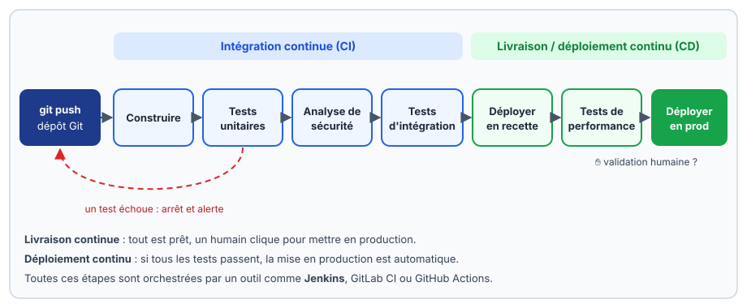

Tests d'intégration et CI/CD¶
Résumé
Des tests unitaires, de charge et de sécurité ne servent à rien si l'on oublie de les lancer. Cette dernière partie présente les tests d'intégration, puis l'intégration continue (CI) et la livraison continue (CD), qui lancent automatiquement tous les tests à chaque modification dans un pipeline. Elle montre enfin comment Jenkins orchestre ce pipeline, avec un Jenkinsfile commenté, et comment tester l'infrastructure décrite en code.
| Propriété | Valeur |
|---|---|
| Difficulté | Intermédiaire |
| Durée estimée | 20 min de lecture et de questions |
| Version décrite | Jenkins LTS 2.555.1 et suivantes (Java 21 ou 25) |
| Place dans le parcours | Partie 5 sur 5 du parcours Les tests en informatique |
| Dernière mise à jour | 2026-11-25 |
1. Les tests d'intégration¶
Un test d'intégration vérifie que plusieurs composants, qui marchent chacun séparément, fonctionnent correctement ensemble : une application et sa base de données, un script et l'annuaire Active Directory, deux applications qui échangent par une API (une interface qui permet à des programmes de dialoguer). Les tests unitaires ont vérifié la pédale de frein et l'étrier ; le test d'intégration vérifie qu'appuyer sur la pédale serre bien l'étrier.
Les défauts d'intégration se cachent dans les points de contact :
- un format de date différent de chaque côté (
25/11/2026contre2026-11-25) ; - un problème d'encodage : les accents de « Hélène » deviennent « Hélène » ;
- un compte de service sans les droits suffisants sur la base de données ;
- un pare-feu, un certificat ou un nom DNS qui empêche deux serveurs de se parler.
Beaucoup de ces défauts viennent de l'environnement (réseau, droits, certificats), pas du code : ils concernent directement l'administrateur.
Intégrer tous les composants d'un coup puis tester (l'intégration big bang) rend les pannes difficiles à localiser. On préfère l'intégration incrémentale : on ajoute les composants un par un, en remplaçant ceux qui ne sont pas encore prêts par des doublures (bouchons ou pilotes). Les tests d'intégration s'exécutent dans un environnement de recette ; les conteneurs Docker simplifient beaucoup la tâche, en démarrant une vraie base de données le temps du test.
2. L'intégration et la livraison continues (CI/CD)¶
2.1 Trois définitions¶
Quand dix personnes modifient les mêmes scripts et ne mettent tout en commun que la veille de la mise en production, conflits et défauts s'accumulent. La réponse : intégrer souvent et tester automatiquement. Cela suppose un gestionnaire de versions comme Git, qui garde l'historique de chaque modification et permet de travailler à plusieurs sur les mêmes fichiers, dans un dépôt central (GitLab, GitHub, Gitea…).
- Intégration continue (Continuous Integration, CI) : à chaque modification envoyée dans le dépôt (
git push), un serveur construit et teste automatiquement le projet. En cas d'échec, l'auteur est prévenu en quelques minutes. - Livraison continue (Continuous Delivery, CD) : chaque version qui passe tous les tests est prête à être mise en production et déployée en recette ; la mise en production reste décidée par un humain, d'un clic.
- Déploiement continu (Continuous Deployment, aussi CD) : si tous les tests passent, la mise en production est automatique.
Le sigle CI/CD désigne l'ensemble, au cœur de la démarche DevOps, qui rapproche développement (Dev) et exploitation (Ops).
2.2 Le pipeline¶
Le pipeline est la suite d'étapes automatiques qu'une modification traverse, du dépôt à la production. Chaque étape est une barrière de qualité : si elle échoue, tout s'arrête.

Un pipeline CI/CD : chaque étape est une barrière de qualité.
On y retrouve tous les tests du parcours, du plus rapide au plus lent, comme dans la pyramide des tests : une erreur grossière est signalée en quelques secondes par les tests unitaires, sans attendre les longs tests de charge. Placer les tests, y compris de sécurité, le plus tôt possible s'appelle « décaler à gauche » (shift left) ; intégrer la sécurité au pipeline (analyses SAST, DAST et SCA) s'appelle le DevSecOps.
Bénéfices : des défauts trouvés en minutes, des mises en production petites et fréquentes (donc moins risquées et faciles à annuler), une traçabilité complète et moins d'erreurs manuelles.
3. Jenkins¶
3.1 Présentation et architecture¶
Jenkins est un serveur d'automatisation libre et gratuit, écrit en Java, né en 2011 d'une scission du projet Hudson. Il reste l'un des outils de CI/CD les plus installés en entreprise, notamment sur des serveurs internes. Des centaines de plugins (extensions) le relient à presque tous les outils : Git, Docker, Ansible, messageries, outils de test.
| Élément | Rôle |
|---|---|
| Contrôleur (controller) | Le serveur central : interface web, configuration, planification, résultats |
| Agent | Une machine qui exécute les tâches. On sépare les agents du contrôleur pour la sécurité et la répartition de la charge |
| Job | Une tâche configurée ; le type Pipeline est décrit par un fichier Jenkinsfile |
| Build | Une exécution numérotée d'un job (#1, #2…), avec son journal et ses résultats |
| Identifiants (credentials) | Le coffre de Jenkins pour les mots de passe, clés SSH et jetons, utilisés sans jamais apparaître en clair |
Jenkins s'installe depuis le dépôt de paquets officiel sous Linux, avec un installateur sous Windows, ou dans un conteneur Docker (image jenkins/jenkins:lts). Depuis sa version stable (LTS, Long-Term Support) 2.555.1, il demande Java 21 ou 25. L'interface web écoute par défaut sur le port 8080, et l'assistant du premier démarrage demande un mot de passe initial écrit dans /var/lib/jenkins/secrets/initialAdminPassword (installation par paquet Linux).
Jenkins est une cible de choix
Jenkins détient les clés de tout ce qu'il déploie. Un Jenkins compromis, c'est toute l'infrastructure compromise. Ne pas l'exposer sur Internet sans protection, garder Jenkins et ses plugins à jour, exécuter les builds sur des agents plutôt que sur le contrôleur, et ranger tous les secrets dans les identifiants.
3.2 Le Jenkinsfile¶
Un Jenkinsfile est un fichier texte placé à la racine du dépôt Git, qui décrit le pipeline : c'est le pipeline as code. Le pipeline est ainsi versionné, relu et historisé comme le reste du projet. Voici un Jenkinsfile en syntaxe déclarative (la plus simple), qui enchaîne les tests vus dans ce parcours pour un projet de scripts déployés avec Ansible :
pipeline {
agent any // exécuter sur n'importe quel agent disponible
stages {
stage('Tests unitaires') { // partie 2 : pytest produit un rapport JUnit XML
steps {
sh 'python3 -m pytest --junitxml=rapports/unitaires.xml tests_unitaires'
}
}
stage('Analyse de sécurité') { // partie 4 : bibliothèques vulnérables (SCA)
steps {
sh 'trivy fs --exit-code 1 --severity HIGH,CRITICAL .'
}
}
stage("Tests d'intégration") {
steps {
sh 'python3 -m pytest --junitxml=rapports/integration.xml tests_integration'
}
}
stage('Déployer en recette') {
steps {
sh 'ansible-playbook -i inventaires/recette deploiement.yml'
}
}
stage('Test de charge') { // partie 3 : JMeter en ligne de commande
steps {
sh 'jmeter -n -t plan-intranet.jmx -l resultats.jtl -e -o rapport-charge'
}
}
stage('Déployer en production') {
when { branch 'main' } // seulement pour la branche principale
input { // livraison continue : un humain valide
message 'Mettre cette version en production ?'
ok 'Déployer'
}
steps {
sh 'ansible-playbook -i inventaires/production deploiement.yml'
}
}
}
post {
always { // dans tous les cas : publier les résultats des tests
junit allowEmptyResults: true, testResults: 'rapports/*.xml'
}
failure { // en cas d'échec : prévenir l'équipe
mail to: 'equipe-infra@example.org',
subject: "Échec du pipeline ${env.JOB_NAME} n°${env.BUILD_NUMBER}",
body: "Détails : ${env.BUILD_URL}"
}
}
}
| Mot-clé | Rôle |
|---|---|
agent any |
Où exécuter : n'importe quel agent (ou un agent précis, ou un conteneur Docker) |
stages / stage('…') |
La liste des étapes, chacune avec le nom affiché dans l'interface |
steps / sh |
Les commandes de l'étape ; sh lance une commande sur un agent Linux (powershell ou bat sous Windows) |
when { branch 'main' } |
L'étape ne s'exécute que pour la branche main (dans un job Multibranch Pipeline) |
input |
Met le pipeline en pause jusqu'à ce qu'une personne autorisée clique sur Déployer |
post |
Ce qui s'exécute à la fin : always (toujours), failure (en cas d'échec), success (en cas de réussite) |
junit |
Lit les rapports JUnit XML et affiche les tests réussis et échoués, et leur évolution |
mail |
Envoie un courriel (serveur de messagerie configuré dans Jenkins) |
Comment Jenkins sait-il qu'un test a échoué ?
Grâce au code de retour des commandes : par convention, un programme qui réussit renvoie 0, et un autre nombre en cas d'échec. pytest renvoie 1 si un test échoue ; trivy renvoie 1 s'il trouve une faille élevée ou critique, parce qu'on lui a demandé --exit-code 1. Dès qu'une commande renvoie autre chose que 0, Jenkins marque l'étape en échec, arrête le pipeline (rien n'est déployé) et exécute le bloc post.
3.3 Déclencher le pipeline et lire les résultats¶
Le pipeline se déclenche à chaque git push, grâce à un webhook (le dépôt prévient Jenkins par une requête HTTP) ; ou par interrogation périodique du dépôt (triggers { pollSCM('H/5 * * * *') }, syntaxe proche de celle de cron) ; ou chaque nuit pour les tests longs ; ou à la main.
Pour chaque build, Jenkins affiche une vue par étapes (une case verte ou rouge par étape, avec sa durée), la sortie de la console (le journal complet, à lire en premier en cas d'échec) et les résultats des tests publiés par l'étape junit.
3.4 Les autres outils¶
GitLab CI/CD (fichier .gitlab-ci.yml), GitHub Actions (fichiers .github/workflows/*.yml) et Azure DevOps Pipelines reposent sur les mêmes principes : un fichier décrit les étapes, chaque modification déclenche le pipeline, une étape en échec arrête tout. Ils sont intégrés à leur plateforme d'hébergement de code, quand Jenkins est autonome, auto-hébergé et extrêmement extensible, au prix d'un entretien régulier.
4. Tester l'infrastructure elle-même¶
Une grande partie de l'infrastructure est aujourd'hui décrite en code (Infrastructure as Code, IaC) : playbooks Ansible, fichiers Terraform ou OpenTofu, fichiers Docker Compose. Ce code passe dans un pipeline, comme une application :
| Niveau | Outil ou commande | Ce qui est vérifié |
|---|---|---|
| Statique | shellcheck, PSScriptAnalyzer, ansible-lint, terraform validate |
Erreurs et mauvaises pratiques, sans rien exécuter |
| Simulation | ansible-playbook --check --diff, terraform plan |
Ce qui serait modifié, créé ou détruit |
| Intégration | Molecule (rôles Ansible) | Le rôle, appliqué dans un conteneur jetable, produit le bon résultat |
| Fumée | curl -fsS https://intranet.exemple.lan/sante |
Après déploiement, le service répond réellement |
| Sécurité | trivy image, trivy config |
Failles dans les images de conteneurs, erreurs de configuration |
Relire le terraform plan avant d'appliquer
Dans un pipeline d'infrastructure, terraform plan est souvent suivi d'une validation humaine (input dans Jenkins) : une ligne « 1 to destroy » inattendue sur un serveur de production se repère avant qu'il ne soit trop tard.
5. Questions de révision¶
- Donner deux défauts qu'un test d'intégration peut trouver et qu'un test unitaire ne peut pas trouver.
- Quelle est la différence entre la livraison continue et le déploiement continu ?
- Pourquoi place-t-on les tests unitaires au début du pipeline et les tests de charge à la fin ?
- Dans le Jenkinsfile ci-dessus, que se passe-t-il si le scan Trivy trouve une faille critique ?
- Pourquoi ne jamais écrire un mot de passe dans un Jenkinsfile ? Où le ranger ?
Corrigé
- Par exemple : un format de date différent entre deux applications, un compte de service sans droits suffisants, un problème d'encodage des accents, un pare-feu ou un certificat qui bloque la communication. Un test unitaire isole chaque composant avec des doublures : il ne voit jamais ces points de contact réels.
- En livraison continue, un humain décide de la mise en production ; en déploiement continu, elle est automatique dès que tous les tests passent.
- Les tests unitaires sont rapides : une erreur grossière arrête le pipeline en quelques secondes. Les tests de charge sont longs et demandent un environnement déployé : on les réserve aux versions qui ont franchi toutes les autres barrières.
trivyrenvoie un code différent de 0 : l'étape passe en échec, le pipeline s'arrête (aucun déploiement), puis le blocpostpublie les résultats des tests et envoie le courriel d'alerte.- Parce que le Jenkinsfile est versionné dans Git : le mot de passe serait lisible par toute personne ayant accès au dépôt et resterait dans l'historique. On le range dans les identifiants de Jenkins, qui le masquent même dans les journaux.
Ressources¶
- Documentation de Jenkins (en anglais) — installation, administration, pipelines.
- Syntaxe des pipelines Jenkins (en anglais) — référence complète du Jenkinsfile déclaratif.
- Politique de support de Java par Jenkins (en anglais) — versions de Java requises.
- Continuous Integration, Martin Fowler (en anglais) — l'article de référence sur l'intégration continue.
- Documentation de Trivy (en anglais) — analyse des dépôts, images et configurations.
Partie précédente : Tests de sécurité · Suite : Annexes : cas de synthèse et glossaire